LL Buchanan Lake
Floating islands.
Betty's Island -1... a floating island....
Introduction... for those who can endure introductions...
Barney Rubble the rock pit worker, friend of Fred Flintstone, has an island on Buchanan Lake, 17 feet by 17 feet, with a few trees.
So Betty wanted an island. And Betty Rubble is not the only Betty who thinks so. So Betty's Island was constructed. It is 30 feet by 30 feet. It holds 12 cubic yards of soil to grow trees, and weighs 36,000 pounds. It can hold an additional 20,000 pounds before sinking.
The object is to affordably float the most soil, for the most and largest vegetation, with the bottom of the soil always in contact with the water, but during long rainy periods or heavy snow, if they happen, not getting so heavy that too much of the soil stays in the water to drown the vegetation roots, and a couple dozen other varied considerations. The vegetated waterfowl nesting habitat, safe from common shore predators, is intended to be esthetically pleasing.
The Premier Floats arrived in May 2006. Real work began in June 2006.
This page starts the story and island construction at the top, in May 2006 and progresses downward to Feb 2007. The story continues on Betty's Island 2 - 6 pages.
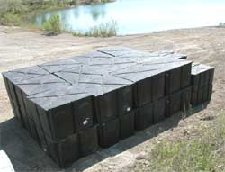
May 2006
The floats will float a steel frame gridwork. The troughs between the floats will hold dirt. The flotation capacity of the floats, and the weight of all the plywood and steel, were easy to calculate. The wet and dry soil weights and vegetation were approximations. Sure hope this thing floats.
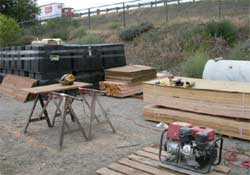
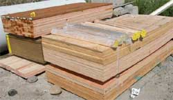
The wood. For the launch ramp, float tops, edge ramps and things.
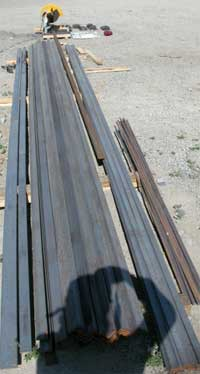
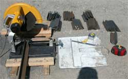
The steel. The steel is 1/4 inch thick, and will be full welded both sides, for longevity in a rusting environment. A lot of pieces.
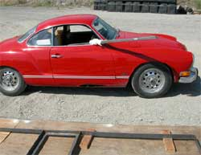
The 73 Karmin Ghia was used to haul tools, steel and many things.
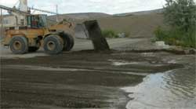
The launch ramp preparation by Jim, one of the cool Central Premix Concrete folks.
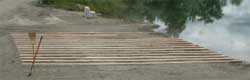
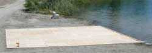
The launch ramp. Not knowing anyone with any rollers to make a launch ramp, the island slave made the ramp from 2 layers of barely thick enough expensive plywood. The base layer is on 2 x 4 boards. The layers of plywood are separated by 189, four foot long dowels, 3/4 inch diameter, bought in bulk. The dowels were held in place during construction, with dabs rubber cement.
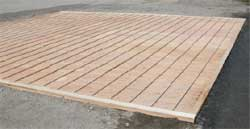
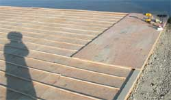
When the island slave takes out the screws around the edge, the island should roll into the water, he thinks. If it does not, we will laugh robustly. The leading edge of each of those pieces of plywood may or may not roll over each next dowel. If not, we will push the whole jumble of goobered-up dowels and plywood into the water, and know to not do that again. Oh, the lake water level rose before the launch ramp was made, on account of a rainy spring in Yakima, and then dropped a foot soon after the steel construction started. The ramp will need to be extended at launch time.
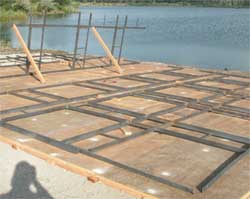
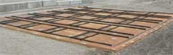
June 2006: Bottom layer of frame.
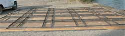
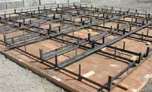
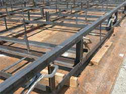
The vertical pieces.
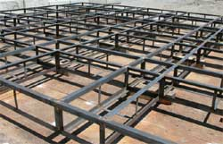
The finished float and soil frame.
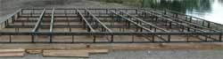
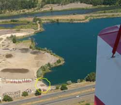
That is the island construction site at the northwest corner of the lake, in the thin yellow squiggly line circle.
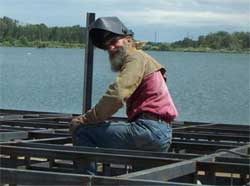
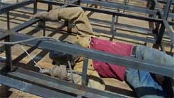
The welder, welding.
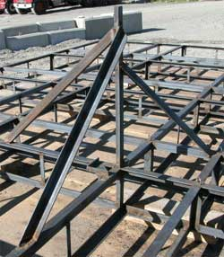
The vertical support is to attach the Osprey perch snag.
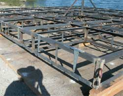
The hinges are for the side ramps.
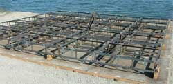
July 2006. The gray mill scale color will soon rust.
End of the 2006 work period.
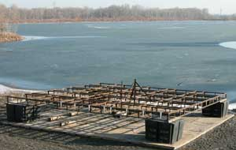
30 January 2007. Notice the frozen lake. Rather unusual. Fortunately the island was made to withstand icebergs.
Lifted the frame and set it on four floats at the corners. Finished welding the underside.
The steel has started to rust.
The lake water level is disturbingly low, as is the adjacent Yakima River, because much water in the watershed has frozen. The roller ramp is not near the water level. May have to wait for the spring water level to rise before launching the island.
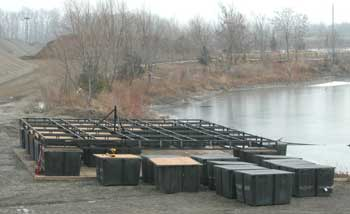
4 Feb.
Neutralized the rust with Rust Converter, turning it to a black surface, then painted it with black Coal Tar Epoxy paint. The thick nasty Epoxy paint will delay the rusting process.
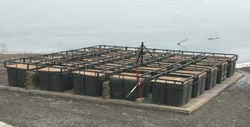
5 Feb. Lowering the frame around the floats, slowly, with the red jack. Drilled the holes to bolt the frame to the floats.
The success of the tight fit between the square plastic floats and the square steel frame holes was fortuitously facilitated by the freezing weather which shrunk the plastic more than the steel. Had it been a hot day, with the heat-expanded plastic floats, some of the float edges would have had to be shaved a bit, at great effort.
Jacking the frame down over the 25 tight fitting floats was an exercise in positioning and adjusting with a pry bar and hammer.
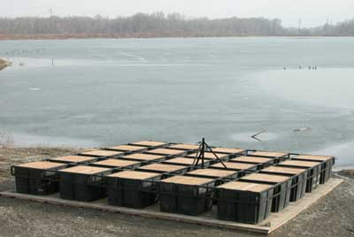
6 Feb. At last, Betty's Island is a one piece thing. Frame bolted to floats.
12 Feb. Slow progress excuse report #137.... If you want to make a floating island for waterfowl habitat, vegetation, visual esthetics, or you are bored to tears, email the island slave. He will tell you what not to do. In fact, it is taking so long to do what not to do, that he has had plenty of time to design a vastly superior floating island design, requiring less time and money for more soil volume and surface area. He would like to start making it forthwith, but he has a lot more of what not do to, to get this one done first because he has too much effort and money in it to abandon this design like he should have. Well, he used 1/4 steel, which is more than strong enough, so it would take longer to rust through. Then he decided to apply rust converter to the frame to make it a bit more rust resistant. Then he decided to paint the frame with Coal Tar Epoxy paint to add more rust resistance. Such things required no small amount of time, and money. His most recent questionable decision was to decide to Coal Tar Epoxy paint the expanded steel trough bottoms. He figured, one day, and one gallon of paint for that effort. Wrong. If somebody suggests painting heavy expanded steel, with thick, brush-on paint, refer them to this website's island slave, anyone else who has made that mistake, or a psychiatrist.
Over 500 Canadian geese were on the lake today, because the geese are keeping track of their new nesting islands, or maybe because it is the only lake in the valley with some unfrozen water.
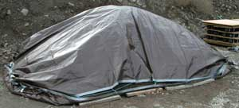
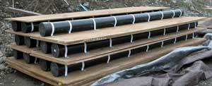
16 Feb. Ice on the lake finished melting. The brown tarp is covering the expensive secret special floating island soil blend delivered from Morton & Sons nursery supplies. Very secret high tech formula stuff. The 4 inch diameter ABS tubes strapped to plywood are the island edge ramps that will be covered with green astro turf, hinged to the island, and slope into the water, to make the island edge look a bit more natural like, and make it easier for the ducks and geese to get up on the island from the lake.
There is bit more epoxy painting of the expanded steel to be done, much to the ongoing amusement of the island slave.
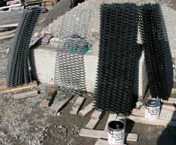
17 Feb. Still painting expanded steel with Coal Tar Epoxy paint. The guys at Standard Paint in Yakima were as amused as the painter each time he came back for yet another gallon of Coal Tar Epoxy paint. Stop by Standard Paint, and mention the guy who kept buying Coal Tar Epoxy paint, one gallon at a time. They will laugh.
19 Feb 2007. Finished Coal Tar Epoxy painting the expanded steel. The island slave will not do that again. The new design for the next island precludes that educational experience.
A nearby gaggle of Canadian geese was watching with such an appearance of derision that, after insuring no humans were watching, the island slave explained the accouterments that would bring the island up to the current Western Flyway Goose Nest Codes, and offer an upscale decor without a pretentious air. The green outdoor carpeted ramps would minimize their front lawn maintenance requirements while maintaining a socially successful neighborhood appearance. The geese honked.
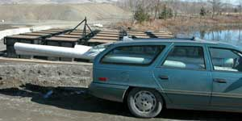
21 Feb. Sure glad my sister does not know what all construction materials I have been hauling in her car. The PVC pipes are to make floats to give Barney's Island a bit of a lift on the low corner. I am trying to find a boat to haul the island anchors out to their positions. Maybe my sister's car would work if I turned it upside down and siliconed the doors. It needs washing anyway.
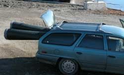
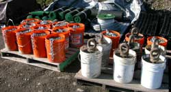
23 Feb 2007. The anchors were made by filling 5 gallon buckets with concrete, with a chain attachment extending out the top. A few were made with scrap trailer hitch attachments. The anchor engineer is guessing at how many will be necessary to hold the island against strong winds.
Last day for the current island project work period. The island guy had to zip back to Alaska for the AlaskanAlplineClub.org new headquarters adventure.
Continued on Betty's Island 2 page.
Betty's Island-2
Betty's Island-3
Betty's Island-4
Betty's Island-5
Betty's Island-6
Barney's Island
Pebbles Island
Aerial Photos
Neighbors
History
Swans
Birds
Trees
Trees-2
Trees-3
Lake
Links